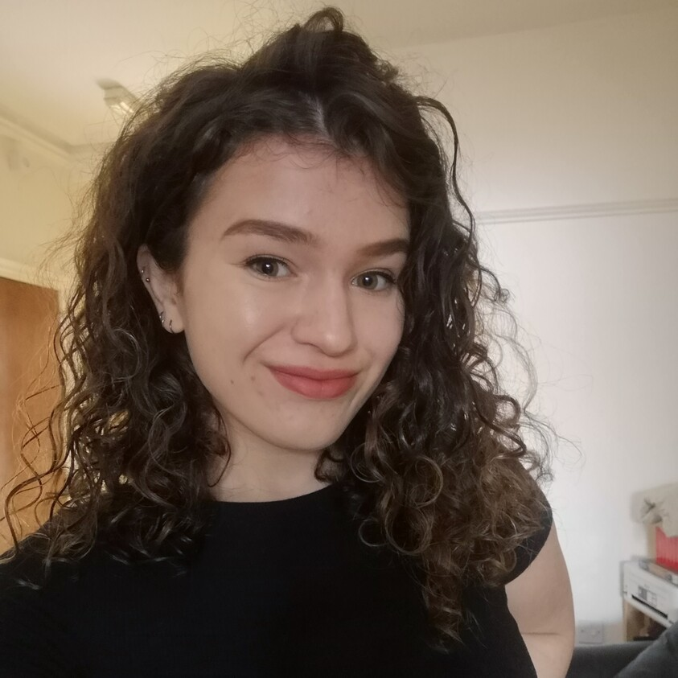

About Me
Hello! I'm Maria Anna Fedyszyn, a Copernicus Digital Earth Masters Student. Welcome to my portfolio!
I am in my first year at Paris Lodron University of Salzburg, where I am developing a strong understanding of earth observation and geoinformatics. Next year, I will go to Palacký University Olomouc, Czech Republic to specialise in Geovisualisation and Geocommunication.
Throughout this 2-year journey, I will document my learning journey and experiences!

Experience
- Environmental Consultant at Savills: I worked on a wide range of schemes from small residential through to Nationally Significant Infrastructure Projects (NSIPs) across the UK. Within the Environment and Infrastructure Department, and played a key role in several teams.
Within the Air Quality team, I led complex modelling activities using ADMS-Roads, within the Health Impact team I co-developed the service line of Health Intelligence Briefings and within the Acoustics and Vibration team carried out monitoring across a range of sites in the South of England.
Throughout my role, I integrated GIS to support planning applications and enhance reports.
Projects which I worked on ensured that the needs of the present are met and maximise available socioeconomic benefits, without compromising the needs of future generations.
- Swimming instructor at several schools in Cardiff, Wales: I taught students ranging in age from 3 to 70+. I developed strong communication skills and strengthened my ability to work in a team.
- Au Pair (self-employed): I spent 1 year in Australia and 3 months in Italy. Both experiences required adaption to different cultures and encouraged me to be self-motivated and adaptable to change.
Education
- BSc (Hons) Environmental Geography, Environmental StudiesBSc (Hons) Environmental Geography, First Class Honours: Cardiff University, Wales (2018-2021)
Professional Affilitations
- Practioner with the Institute of Environmental Management (PIEMA)
- Registered Environmentalist (REnvP)
- Affiliate with the Institute of Acoustics